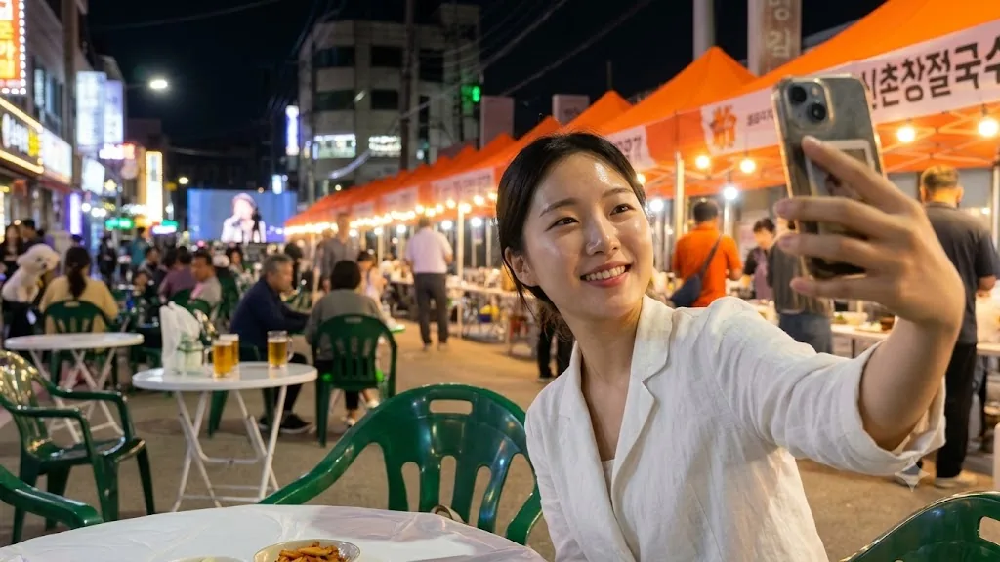
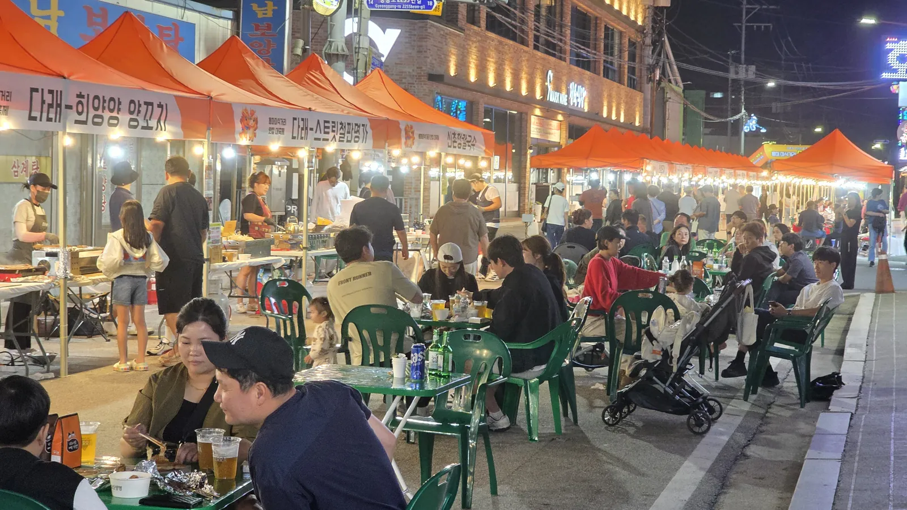
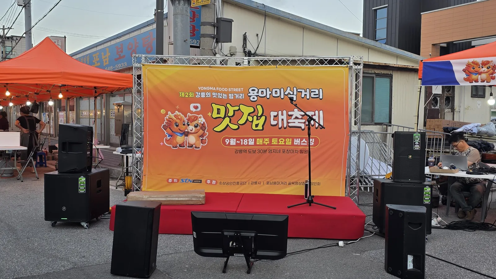
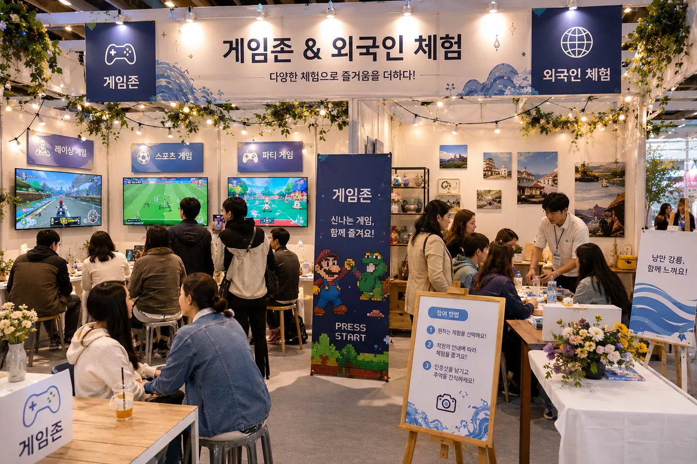
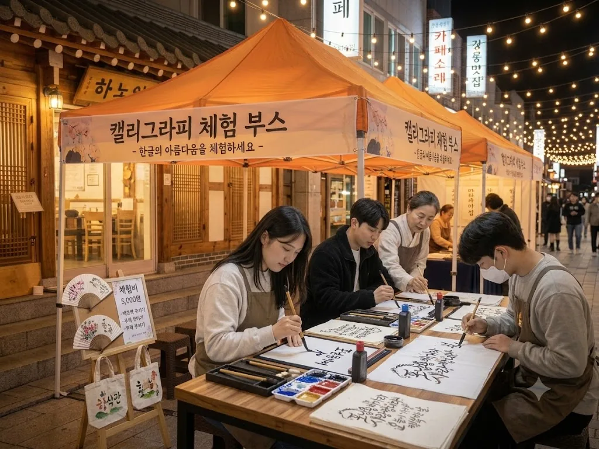
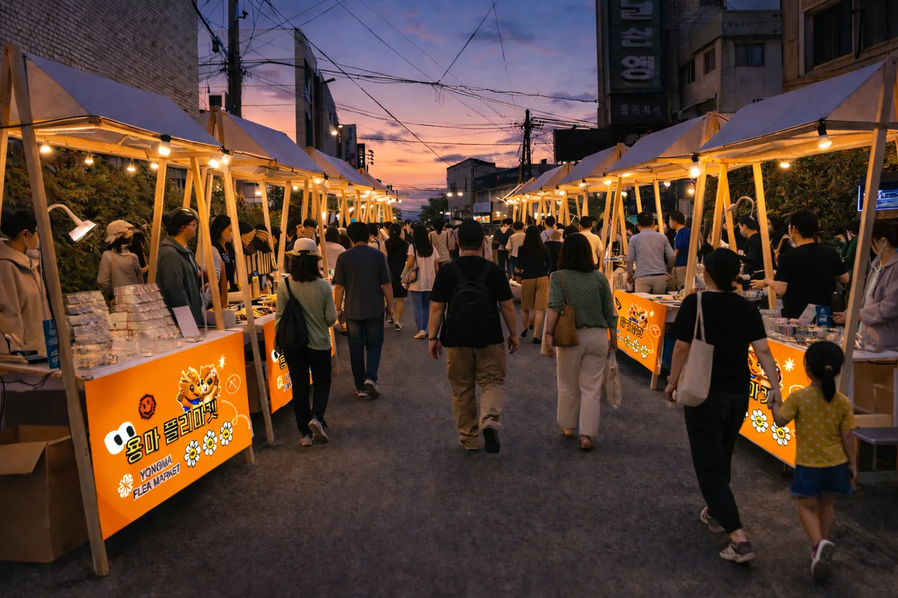
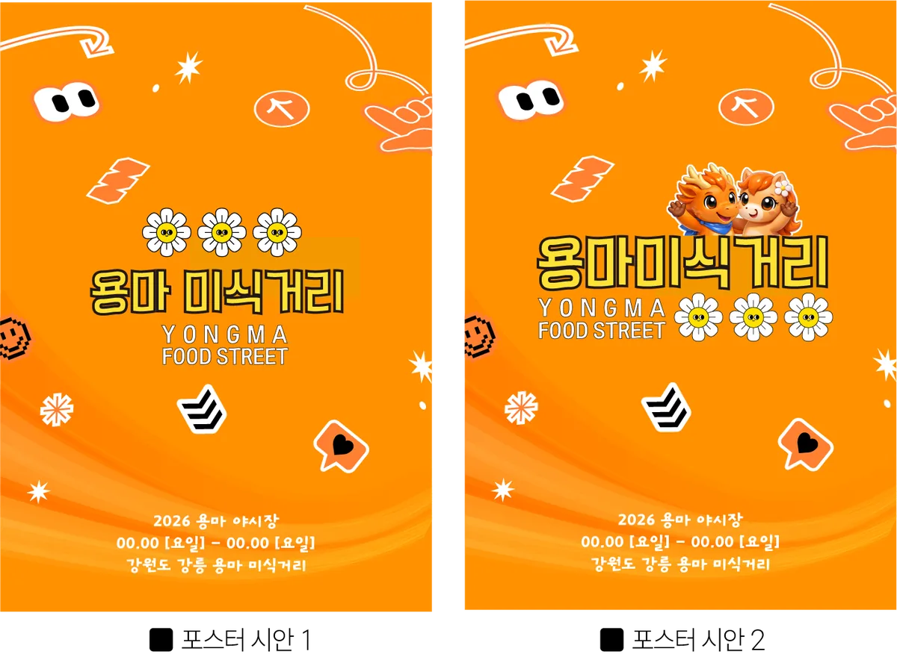

캐릭터 조형물
상징 캐릭터 「용」과 「마」를 FRP 조형물로 세워 골목의 랜드마크로 삼습니다.
입구에서 창업까지, 골목 하나를 따라 이어지는 하나의 동선으로 설계했습니다.
입구에서 짐을 맡기고, 향토음식을 맛보고, 버스킹을 듣고, 사진을 남기고, 체험까지. 다섯 걸음이면 골목 한 바퀴입니다.





KTX 여행객의 상권 진입 장벽을 없애는 거점입니다. 캐리어와 무거운 짐을 맡기고 가볍게 골목을 둘러보세요.
| 이용 요금 | 무료 |
|---|---|
| 운영 시간 | 운영일(금·토) 17:00 ~ 22:00 |
맡기는 방법
| |
찾는 방법
| |
| 맡길 수 있는 것 | 캐리어 · 배낭 · 쇼핑백 등 (귀중품·현금·전자기기는 맡아 드리지 않습니다) |
상인회 사무실을 활용하며, 사업 종료 후에도 상인회가 직접 운영합니다.

농식품부 K-미식벨트와 연계한 강릉 향토음식 특화 구간입니다.
버스킹·DJ 음악다방 통합 총 15회. 집객의 핵심 앵커입니다.
인디밴드·어쿠스틱·보컬·댄스·국악 크로스오버 버스킹에 이어 DJ 음악다방·거리노래방까지 하루에 함께 여는 통합 무대

연령대와 국적에 상관없이 머물 수 있는 체험·참여 공간입니다. 차 없는 거리 위 부스에서 진행합니다.
| 향토음식 체험 부스 | 감자옹심이 빚기·꼬막 비빔밥 만들기 + 강릉커피 로스팅 |
|---|---|
| 인형뽑기 부스 | 대형 인형 도전 · 가족·청년층 체류 콘텐츠 |
| 캘리그라피 부스 | 한글 손글씨 체험 · 부채·엽서·에코백에 새기기 |
| 강릉 예술인존 | 로컬 작가 작품 전시·판매·라이브 퍼포먼스 |
| 외국인 체험 부스 | 옹심이·한과 만들기 + 영문 인증서 발급 + 다국어 안내 |



브랜드부터 조명, 쉼터까지. 골목 전체의 인상을 함께 정비합니다.
상징 캐릭터 「용」과 「마」를 FRP 조형물로 세워 골목의 랜드마크로 삼습니다.

차 없는 거리 가장자리 300m에 파라솔·난방설비·몽골텐트를 임차 운영합니다.

스트링라이트·포인트 조명·바닥 유도조명과 야외 음향 시스템을 설치합니다.

브랜드명·슬로건·CI와 사인·간판·홍보물 적용 매뉴얼, 다국어 홈페이지를 제작합니다.